산업안전기사 (2008-05-11 기출문제)
1과목: 안전관리론
1. 알더퍼(Alderfer)의 ERG 이론 중 다른 사람과의 상호 작용을 통하여 만족을 추구하는 대인욕구와 관련이 가장 깊은 것은?
- 성장욕구
- 관계욕구
- 존재욕구
- 위생욕구
(정답률: 87%)

2. 산업안전보건법에서 정한 사업내 안전ㆍ보건교육 중 채용 및 작업내용 변경시 교육 내용이 아닌 것은?
- 기계・기구의 위험성과 작업의 순서 및 동선에 관한 사항
- 산업보건 및 직업병 예방에 관한 사항
- 물질안전보건자료에 관한 사항
- 표준안전작업방법에 관한 사항
(정답률: 49%)
3. 브레인스토밍(Brain-storming) 기법에 관한 설명으로 틀린 것은?
- 무엇이든지 좋으니 많이 발언한다.
- 타인의 의견을 수정하여 발언한다.
- 다른 사람 의견에 대하여 반대한다.
- “좋다, 나쁘다” 등의 비평을 하지 않는다.
(정답률: 87%)
4. 다음 중 OJT(On the Job Training)의 특징에 대한 설명으로 옳은 것은?
- 직장의 실정에 맞는 구체적이고 실제적인 지도 교육이 가능하다.
- 타 직장의 근로자와 지식이나 경험을 교류할 수 있다.
- 외부의 전문가를 위촉하여 전문교육을 실시할 수 있다.
- 다수의 근로자에게 조직적 훈련이 가능하다.
(정답률: 78%)
5. 다음 중 강의식 교육지도에서 가장 많은 시간을 소비하는 부분은?
- 도입
- 제시
- 적용
- 확인
(정답률: 72%)
6. 다음 중 인간의 동기부여에 관한 맥그리거(McGregor)의X 이론에 해당하지 않는 것은?
- 인간은 스스로 자기 통제를 한다.
- 인간은 본래 게으르고 태만하다.
- 동기는 생리적 수준 및 안전의 수준에서 나타난다.
- 인간은 명령받는 것을 좋아하며 책임을 회피하려 한다.
(정답률: 71%)
7. K 사업장의 근로자가 90명이고, 3건의 재해가 발생하여 5명의 사상자가 발생하였다면 이 사업장의 도수율은 약 얼마인가? (단, 1인 1일 9시간씩 년간 300일을 근무하였다.)
- 12.35
- 13.89
- 20.58
- 55.56
(정답률: 58%)
8. 안전ㆍ보건표지의 종류 중 바탕은 파란색, 관련 그림은 흰색을 사용하는 표지는?
- 금지표지
- 경고표지
- 지시표지
- 안내표지
(정답률: 72%)
9. 근원적 안전대책 중 부품의 고장이 있더라도 기계는 다음의 보수가 이루어질 때까지 안전한 기능을 유지 하도록 하는 것을 무엇이라고 하는가?
- Fail-Passive
- Fail-Active
- Fail-Operational
- Fool-Proof
(정답률: 62%)
10. 다음 중 재해의 발생형태에 해당하지 않는 것은?
- 낙하ㆍ비래
- 협착
- 이상온도노출
- 골절
(정답률: 54%)
11. 인간의 실수를 없애기 위하여 눈, 손, 입 그리고 귀를 이용하여 작업시작 전에 뇌를 자극시켜 안전을 확보하기 위한 기법은?
- 브레인스토밍
- 터치 앤드 콜
- 롤 플레잉
- 지적확인
(정답률: 56%)
12. 다음 중 안전보건교육의 단계별 종류에 해당하지 않는 것은?
- 지식교육
- 기능교육
- 태도교육
- 기초교육
(정답률: 77%)
13. 하행선 기차역에 정지하고 있는 열차 안의 승객이 반대편 상행선 열차의 출발로 인하여 하행선 열차가 움직이는것 같은 착각을 일으키는 현상을 무엇이라고 하는가?
- 유도운동
- 자동운동
- 가현운동
- 브라운 운동
(정답률: 63%)
14. 다음 중 하인리히의 사고예방대책 5단계에서 각 단계별 과정이 틀린 것은?
- 1단계 : 조직
- 2단계 : 사실의 발견
- 3단계 : 관리
- 4단계 : 시정책의 선정
(정답률: 63%)
15. 다음 중 고음만을 차음하는 방음보호구의 기호는?
- NRR
- EM
- EP-1
- EP-2
(정답률: 59%)
16. 산업재해의 원인 중 기술적 원인에 해당하는 것은?
- 작업준비의 불충분
- 안전장치의 기능 제거
- 안전교육의 부족
- 생산방법의 부적당
(정답률: 47%)
17. 적응기제(適應機制)의 형태 중 방어적 기제에 해당하지 않는 것은?
- 고립
- 보상
- 승화
- 합리화
(정답률: 64%)
18. 다음 중 무재해운동의 이념에서 “선취의 원칙”을 가장 적절하게 설명한 것은?
- 사고의 잠재요인을 사후에 파악하는 것
- 근로자 전원이 일체감을 조성하여 참여하는 것
- 위험요소를 사전에 발견, 파악하여 재해를 예방하거나 방지하는 것
- 관리감독자 또는 경영층에서의 자발적 참여로 안전활동을 촉진하는 것
(정답률: 86%)
19. 다음 중 버드(Frank Bird)의 도미노이론에서 재해발생의 근원적 원인에 해당하는 것은?
- 상해발생
- 징후발생
- 접촉발생
- 관리소홀
(정답률: 69%)
20. 재해코스트 산정에 있어 시몬즈(R.H.Simonds)방식에 의한 재해코스트 총액을 올바르게 나타낸 것은?
- 직접비 + 간접비
- 직접비 + 비보험코스트
- 보험코스트 + 비보험코스트
- 보험코스트 + 사업부 보상금 지급액
(정답률: 83%)
2과목: 인간공학 및 시스템안전공학
21. 다음 중 시스템 수명곡선(욕조곡선)에 있어서 디버깅(debugging)과 가장 관련이 깊은 것은?
- 초기 고장기간의 대표적 안정화과정이다.
- 우발 고장기간의 대표적 안정화과정이다.
- 마모 고장기간의 대표적 안정화과정이다.
- 고장기간의 안정화과정과는 아무 관계가 없다.
(정답률: 56%)
22. FTA 도표에 사용되는 기호 중 “통상사상”을 나타내는 기호는?
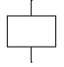
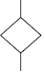
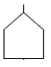
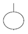
(정답률: 69%)
23. 반경 10cm의 조종구(ball control)를 30° 움직였을 때 표시장치는 1cm 이동하였다. 이 때 통제표시비(C/D)는 약 얼마인가?
- 2.56
- 3.12
- 4.⑤
- 5.24
(정답률: 31%)
24. 위험도분석(CA, Criticality Analysis)에서 설비고장에 따른 위험도를 4가지로 분류하고 있다. 이 중 생명의 상실로 이어질 염려가 있는 고장의 분류에 해당하는 것은?
- category Ⅰ
- category Ⅱ
- category Ⅲ
- category Ⅳ
(정답률: 52%)
25. 소음이 심한 기계로부터 2m 떨어진 곳의 음압수준이 100dB 이라면 이 기계로부터 4.5m 떨어진 곳의 음압수준은 약 몇 dB인가?
- 85.43
- 89.54
- 92.96
- 102.76
(정답률: 38%)
26. 다음 중 Webber의 법칙에서 Webber 비를 구하는 식으로 옳은 것은? (단, ΔI 는 특정 감관의 변화감지역, I는 사용되는 표준자극을 의미한다.)
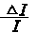
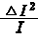
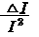
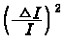
(정답률: 67%)
27. 다음 중 정적자세를 유지할 때 진전(tremor)을 가장 감소시키는 손의 위치로 옳은 것은?
- 손이 머리 위에 있을 때
- 손이 심장 높이에 있을 때
- 손이 배꼽 높이에 있을 때
- 손이 무릎 높이에 있을 때
(정답률: 50%)
28. 어떤 외부로부터의 자극이 눈이나 귀를 통해 입력되어 뇌에 전달되고, 판단을 한 후 뇌의 명령이 신체부위에 전달될 때까지의 시간을 무엇이라 하는가?
- 감지시간
- 반응시간
- 동작시간
- 정보처리시간
(정답률: 57%)
29. 반사율이 85%, 글자의 밝기가 400cd/m2 인 VDT화면에 350lx의 조명이 있다면 대비는 약 얼마인가?
- -2.8
- -4.2
- -5.0
- -6.0
(정답률: 48%)
30. FTA에서 시스템의 기능을 살리는데 필요한 최소 요인의 집합을 무엇이라 하는가?
- critical set
- minimal gate
- minimal path
- Boolean indicated cut set
(정답률: 78%)
31. 화학설비에 대한 안전성 평가에서 정량적 평가 항목에 해당하지 않는 것은?
- 보전
- 조작
- 취급물질
- 화학설비용량
(정답률: 63%)
32. [그림]과 같은 시스템의 전체 신뢰도는 약 얼마인가?(단, 원 안의 수치는 각 구성요소의 신뢰도이다.)
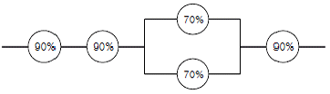
- 56%
- 66%
- 75%
- 85%
(정답률: 65%)
33. 다음 중 위험 및 운전성 검토(HAZOP)에서 “성질상의감소”를 나타내는 가이드 워드는?
- MORE LESS
- OTHER THAN
- AS WELL AS
- PART OF
(정답률: 57%)
34. 다음 중 시스템의 수명곡선(욕조곡선)에서 마모고장 기간의 고장 형태로 옳은 것은?
- 감소형
- 증가형
- 일정형
- 지그재그형
(정답률: 68%)
35. 다음 중 인간-기계 통합체계의 유형에서 수동체계에 해당하는 것은?
- 자동차
- 컴퓨터
- 공작기계
- 장인과 공구
(정답률: 80%)
36. 어느 부품 10000개를 10000시간 동안 가동 중에 5개의 불량품이 발생하였을 때 평균동작시간(MTTF)은?
- 1 × 10⁶ 시간
- 2 × 10⁷ 시간
- 1 × 10⁸ 시간
- 1 × 10⁹시간
(정답률: 56%)
37. 인간이 절대 식별할 수 있는 대안의 최대 범위는 대략 7 이라고 한다. 이를 정보량의 단위인 bit로 표시하면 약 몇 bit가 되는가?
- 3.2
- 3.0
- 2.8
- 2.6
(정답률: 61%)
38. 다음 중 인간이 기계보다 우수한 능력이 아닌 것은?
- 문제 해결에 독창성 발휘
- 경험을 활용한 행동방향 개선
- 단시간에 많은 양의 정보기억과 재생
- 상황에 따라 변화하는 복잡한 자극의 형태 식별
(정답률: 77%)
39. 인간의 시(視)식별 기능에 영향을 주는 외적 요인으로 볼 수 없는 것은?
- 사람의 개인차
- 색채의 사용과 조명
- 물체와 배경 간의 대비
- 표적물체나 관측자의 이동
(정답률: 71%)
40. 다음 중 양립성의 종류에 속하지 않는 것은?
- 공간 양립성
- 형태 양립성
- 개념 양립성
- 운동 양립성
(정답률: 57%)
3과목: 기계위험방지기술
41. 셰이퍼(shaper)의 안전장치로 볼 수 없는 것은?
- 방책
- 칩받이
- 칸막이
- 시건장치
(정답률: 65%)
42. 프레스의 위험성에 대해 기술한 내용으로 틀린 것은?
- 부품의 송급ㆍ배출이 핸드 인 다이로 이루어지는 것은 작업시 위험성이 크다.
- 마찰식 클러치 프레스의 경우 하강중인 슬라이드를 정지시킬 수 없어서 기계자체 기능상의 위험성을 내포하고 있다.
- 일반적으로 프레스는 범용성이 우수한 기계지만 그에 대응하는 안전조치들이 미비한 경우가 많아 위험성이 높다.
- 신체의 일부가 작업점에 노출되면 전단ㆍ협착 등의 재해를 당할 위험성이 매우 높다.
(정답률: 68%)
43. 보일러에 가장 많이 사용되는 안전밸브의 종류는?
- 지렛대식
- 추식
- 전자식
- 스프링식
(정답률: 64%)
44. 산업용 로봇의 작동 범위 내에서 교시 등의 작업을 하는 때에는 작업시작 전에 어떤 사항을 점검하는가?
- 언로드 밸브의 기능의 이상 유무
- 자동제어장치의 기능의 이상 유무
- 제동장치 및 비상정지장치의 기능의 이상 유무
- 권과방지장치의 이상 유무
(정답률: 56%)
45. 프레스방호장치에 대한 설명 중 잘못된 것은?
- 누름버튼의 간격은 300mm 이상으로 한다.
- 수인식 방호장치는 120SPM 이하의 프레스에 적합하다.
- 1행정 1정지식에 적합한 방호장치는 양수조작식 이다.
- 금형 가이드 포스트와 부시와의 간격은 8mm 이상이어야 한다.
(정답률: 50%)
46. 비상안전 제어로프(safety trip wire cable)장치는 송급 및 인출 컨베이어, 슈트 및 호퍼 등에 의해서 제한이 되는 밀기에 사용된다. 이는 롤러의 방호장치 중 어느 것인가?
- 손조작식
- 복부조작식
- 무릎조작식
- 손쳐내기식
(정답률: 46%)
47. 프레스기의 게이트가드(Gate Guard)식 방호장치의 종류가 아닌 것은?
- 하강식
- 도립식
- 경사식
- 횡슬라이드식
(정답률: 52%)
48. 기계나 그 부품에 고장이나 기능 불량이 생겨도 항상 안전하게 작동하는 구조와 기능을 추구하는 본질적 안전화는?
- 풀푸르프
- 페일세이프
- 이중낙하방지
- 연동기구
(정답률: 71%)
49. 승강기에는 제작, 안전 및 검사 기준에서 정한 방호장치를 설치하여야 한다. 다음 설명 중 틀린 것은?
- 카 내부에서 동력을 차단시킬 수 있는 장치
- 카 상부에서 동력을 차단시킬 수 있는 장치
- 하강 속도가 정격속도의 2.4배에서 조속기 로프를 구속하는 장치
- 카의 출입구 문이 닫히지 않았을 때는 카가 승강되지 않는 장치
(정답률: 50%)
50. 다음 중 방호장치의 기본목적과 관계가 먼 것은?
- 작업자의 보호
- 기계기능의 향상
- 인적ㆍ물적손실의 방지
- 기계위험 부위의 접속방지
(정답률: 75%)
51. 목재 가공용 둥근톱의 방호장치 중 주 안내판과 톱날사이의 공간에서 나무가 퍼질 수 있게 하여 죄임으로 인한 반발을 방지하는 것은?(오류 신고가 접수된 문제입니다. 반드시 정답과 해설을 확인하시기 바랍니다.)
- 분할날
- 반발방지 롤
- 반발방지 핑거
- 보조안내판
(정답률: 33%)
52. 롤러의 가드 설치방법에서 안전한 작업공간에서 사고를 일으키는 공간함정(trap)을 막기 위해 신체부위와 최소 틈새가 바르게 짝지어진 것은?
- 다리 : 500mm
- 발 : 300mm
- 손목 : 200mm
- 손가락 : 25mm
(정답률: 63%)
53. 상용운전압력 이상으로 압력이 상승할 경우 보일러의 파열을 방지하기 위하여 버너의 연소를 차단하여 열원을 제거함으로써 정상압력으로 유도하는 장치는?
- 압력방출장치
- 고저수위 조절장치
- 압력제한 스위치
- 통풍제어 스위치
(정답률: 68%)
54. 셰이퍼(shaper) 작업에서 위험요인이 아닌 것은?
- 가공칩(chip)비산
- 램(ram) 말단부 충돌
- 바이트(bite)의 이탈
- 척-핸들(chuck-handle) 이탈
(정답률: 66%)
55. 프레스 작동 후 작업점까지 도달시간이 0.6초 걸렸다면 양수기동식 방호장치의 조작부의 설치거리는 최소 몇 이상이 여야 하나? (단, 인간의 손의 기준 속도는 1.6m/s로 한다.)
- 96
- 80
- 70
- 60
(정답률: 56%)
56. 설비보전에 있어서 장치공업의 대부분은 예방보전방법 (PM)이 채택되고 있다. 즉, 철강업 등에서는 보통 10일 간격으로 10시간 정도의 정기 수리일을 마련하여 대대적인 수리, 수선을 하게 되는데 이와 같이 일정기간마다 보수를 하는 것을 무엇이라 하는가?
- 사후보전(Break down Maintenance(BM))
- 시간기준보전(Time Based Maintenance(TBM))
- 개량보전(Concentration Maintenance(CM))
- 상태기준보전(Condition Based Maintenance(CBM))
(정답률: 70%)
57. 호이스트(hoist)에서 버튼식 조정판에 연결하는 전원은 얼마가 가장 적당한가?
- 100V 이하
- 100V 초과
- 200V 이하
- 200V 초과
(정답률: 51%)
58. 연삭기에서 숫돌의 바깥지름이 180mm일 경우 평형플랜지 지름은 몇 mm 이상이어야 하는가?
- 30
- 50
- 60
- 90
(정답률: 76%)
59. 휴대용 연삭기의 안전커버의 덮개 노출각도는 최대 몇도 이내로 하여야 하는가?
- 60°
- 90°
- 125°
- 180°
(정답률: 63%)
60. 회전축, 기어, 풀리, 플라이 휠 등에는 어떤 고정구를 설치해야 하는가?
- 개방형 고정구
- 돌출형 고정구
- 묻힘형 고정구
- 요철형 고정구
(정답률: 77%)
4과목: 전기위험방지기술
61. 물체에 정전기가 대전하면 정전에너지를 갖게 되는데 다음 중 정전에너지를 나타내는 식으로 알맞은 것은?
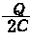
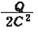
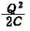
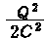
(정답률: 62%)
62. 다음 중 활선근접 작업시의 안전조치로 적절하지 않은 것은?
- 저압 활선작업시 노출 충전부분의 방호가 어려운 경우에는 작업자에게 절연용 보호구를 착용토록 한다.
- 고압 활선작업시는 작업자에게 절연용 보호구를 착용 시킨다.
- 고압선로의 근접작업시 머리위로 30cm, 몸옆과 발밑으로 50cm 이상 접근한계 거리를 반드시 유지하여야 한다.
- 특별고압 전로에 근접하여 작업시 감전위험이 없도록 대지와 절연조치가 된 활선작업용 장치를 사용하여야 한다.
(정답률: 66%)
63. 전압은 저압, 고압 및 특별고압으로 구분되고 있다. 다음 중 저압에 대한 설명으로 가장 알맞은 것은?
- 직류 750V 미만, 교류 650V 미만
- 직류 750V 이하, 교류 650V 이하
- 직류 750V 이하, 교류 600V 이하
- 직류 750V 미만, 교류 600V 미만
(정답률: 57%)
64. 폭발위험장소의 분류에서 가스폭발위험장소 중 1종 장소에 해당되는 것은?
- 용기의 내부
- 맨홀의 주위
- 개스킷의 주위
- 집진장치의 내부
(정답률: 45%)
65. 누전경보기는 사용전압이 600V 이하인 경계전로의 누설 전류를 검출하여 당해 소방대상물의 관계자에게 경보를 발하는 설비를 말한다. 다음 중 누전경보기의 구성으로 옳은 것은?
- 변압기 - 발신기
- 변류기 - 수신부
- 중계기 - 감지기
- 차단기 - 증폭기
(정답률: 49%)
66. 침대평판 전극간에 직류 고전압을 인가한 경우 간격 내에서 정 corona가 진전해 가는 순서로 알맞은 것은?
- 글로우코로나(glow corona) - 스트리머코로나(streamer corona) - 브러시코로나(brush corona)
- 스트리머코로나(streamer corona) - 글로우코로나(glow corona) - 브러시코로나(brush corona)
- 글로우코로나(glow corona) - 브러시코로나(brush corona) - 스트리머코로나(streamer corona)
- 브러시코로나(brush corona) - 스트리머코로나(streamer corona) - 글로우코로나(glow corona)
(정답률: 49%)
67. 다음 중 정전기의 발생 현상에 포함되지 않는 것은?
- 파괴 대전
- 분출 대전
- 전도 대전
- 유동 대전
(정답률: 40%)
68. 폭발한계에 도달한 메탄가스가 공기에 혼합되었을 경우 착화한계전압은 약 몇 [V]인가? (단, 메탄의 착화최소에너지는 0.2mJ, 극간 용량은 10pF으로 한다.)
- 6325V
- 5225V
- 4135V
- 3035V
(정답률: 50%)
69. 다음 중 작업조건과 적합한 보호구의 연결로서 옳지 않은 것은?
- 정전기 대전에 의한 위험이 있는 작업 : 안전대
- 고열에 의한 화상 등의 위험이 있는 작업 : 방열복
- 감전의 위험이 있는 작업 : 안전화
- 용접시 불꽃이 날아 흩어질 위험이 있는 작업 : 보안면
(정답률: 68%)
70. 다음 중 직접 접촉에 의한 감전방지 방법으로 적절하지 않은 것은?
- 충전부가 노출되지 않도록 폐쇄형 외함이 있는 구조로 할 것
- 충전부에 충분한 절연효과가 있는 방호망 또는 절연 덮개를 설치할 것
- 충전부는 출입이 용이한 전개된 장소에 설치하고 위험 표시 등의 방법으로 방호를 강화할 것
- 충전부는 내구성이 있는 절연물로 완전히 덮어 감쌀 것
(정답률: 71%)
71. 인체의 전기저항을 최악의 상태라고 가정하여 500Ω으로 하는 경우 심실세동을 일으킬 수 있는 에너지는 얼마 정도인가?(단, 심실세동전류
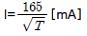
로 한다.)- 6.5 ~ 17.0[J]
- 2.5 ~ 3.0[J]
- 250 ~ 300[mJ]
- 650 ~ 1700[mJ]
(정답률: 66%)
72. 건조시 인체의 전기저항을 피부저항만으로 가정하여 2500[Ωㆍcm2]할 때 피부에 땀이 나 있을 경우의 전기저항은 약 몇 [Ωㆍcm2]인가?
- 50 ~ 100[Ωㆍcm2]
- 125 ~ 208[Ωㆍcm2]
- 550 ~ 600[Ωㆍcm2]
- 800[Ωㆍcm2] 이상
(정답률: 51%)
73. 내압방폭구조에서 안전간극(safe gap)을 적게 하는 이유로 가장 알맞은 것은?
- 최소점화에너지를 높게 하기 위해
- 폭발화염이 외부로 전파되지 않도록 하기 위해
- 폭발압력에 견디고 파손되지 않도록 하기 위해
- 쥐가 침입해서 전선 등을 갉아먹지 않도록 하기 위해
(정답률: 72%)
74. 다음 중 피뢰기의 구성요소로 알맞은 것은?
- 특성 요소와 소호리액터
- 소호리액터와 콘덴서
- 특성 요소와 콘덴서
- 특성 요소와 직렬 갭
(정답률: 49%)
75. 교류 아크용접기의 자동전격방지장치는 아크 발생이 중단된 후 출력측 무부하 전압을 몇 [V] 이하로 저하시켜야 하는가?
- 25 ~ 30V
- 35 ~ 50V
- 55 ~ 75V
- 80 ~ 100V
(정답률: 74%)
76. 고압용 또는 특별고압용의 개폐기 ㆍ 차단기 ㆍ 피뢰기 기타이와 유사한 기기로서 동작시에 아크가 생기는 것은 목재의벽 또는 천장, 기타의 인화성 물체로부터 이격하여야 하는데 다음 중 고압용과 특별고압용의 이격거리로 알맞은 것은?
- 고압용 : 0.8m 이상, 특별고압용: 1.0m 이상
- 고압용 : 1.0m 이상, 특별고압용: 2.0m 이상
- 고압용 : 2.0m 이상, 특별고압용: 3.0m 이상
- 고압용 : 3.5m 이상, 특별고압용: 4.0m 이상
(정답률: 64%)
77. 대지전압(접지식 전로는 전선과 대지간의 전압, 비접지식 전로는 전선간의 전압)이 150V 이하인 경우 전로의 절연 저항값은 최소 몇 [㏁] 이상이어야 하는가?
- 0.⑤㏁
- 0.1㏁
- 0.2㏁
- 0.3㏁
(정답률: 59%)
78. 상용주파수 60[Hz]교류에서 성인 남자의 경우 고통한계 전류[mA]로 가장 알맞은 것은?
- 1mA
- 3 ~ 4mA
- 7 ~ 8mA
- 15 ~ 20mA
(정답률: 67%)
79. 다음 중 아크방전의 전압전류 특성으로 가장 알맞은 것은?
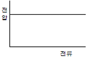
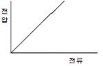
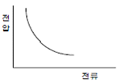
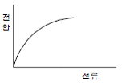
(정답률: 56%)
80. 다음 중 제전능력이 가장 뛰어난 제전기는?
- 이온제어식 제전기
- 전압인가식 제전기
- 방사선식 제전기
- 자기방전식 제전기
(정답률: 48%)
5과목: 화학설비위험방지기술
81. 폭발성 물질을 저장ㆍ취급하는 화학설비 및 그 부속설비를 설치할 때 단위공정시설 및 설비로부터 다른 단위 공정시설 및 설비사이의 안전거리는 설비 외면으로 부터 몇 m 이상 두어야 하는가?
- 3
- 5
- 10
- 20
(정답률: 68%)
82. 3성분계 혼합가스에 있어서 인화성가스(F), 조연성가스(S), 불활성가스(I)가 각각 한 가지씩 구성되는 경우 폭발범위를 나타낸 삼각도로 옳은 것은?
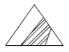
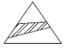
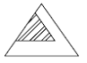
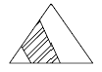
(정답률: 42%)
83. 고체의 연소형태 중 증발연소에 속하는 것은?
- 목탄
- 목재
- TNT
- 나프탈렌
(정답률: 73%)
84. 다음 중 억제소화약제인 Halon 2402의 화학식으로 옳은 것은?
- C2F4Br2
- CF3Br
- CF2ClBr
- C2F2Br4
(정답률: 73%)
85. 물이 관 속을 흐를 때 유동하는 물속의 어느 부분의 정압이 그 때의 물의 증기압보다 낮을 경우 물이 증발하여 부분적으로 증기가 발생되어 배관의 부식을 초래하는 경우가 있다. 이러한 현상을 무엇이라 하는가?
- 수격작용(water hammering)
- 공동현상(cavitation)
- 서어징(surging)
- 비말동반(entrainment)
(정답률: 68%)
86. 다음 중 용기의 한 개구부로 불활성 가스를 주입하고 다른 개구부로부터 대기 또는 스크러버로 혼합가스를 용기에서 축출하는 퍼지 방법은?
- 진공퍼지
- 압력퍼지
- 스위프퍼지
- 사이펀퍼지
(정답률: 51%)
87. 다음 중 금속화재는 어떤 중류의 화재에 해당되는가?
- A급
- B급
- C급
- D급
(정답률: 74%)
88. 헥산 1vol%, 메탄 2vol%, 에틸렌 2vol%, 공기 95vol% 로 된 혼합가스의 폭발하한계 값(vol%)은 약 얼마인가?(단, 헥산, 메탄, 에틸렌의 폭발하한계 값은 각각 1.1, 5.0,2.7vol%이다.)
- 2.44
- 12.89
- 21.78
- 48.78
(정답률: 51%)
89. 다음 중 분진폭발의 특징을 가장 올바르게 설명한 것은?
- 가스폭발보다 발생에너지기 작다.
- 폭발압력과 연소속도는 가스폭발보다 크다.
- 불완전연소로 인한 가스중독의 위험성은 적다.
- 화염의 파급속도보다 압력의 파급속도가 크다.
(정답률: 64%)
90. 반응폭주 등 급격한 압력상승의 우려가 있는 경우에 설치하는 안전장치로 가장 적합한 것은?
- 파열판
- 통기밸브
- 체크밸브
- Flame arrester
(정답률: 57%)
91. 산업안전보건법에서 정한 위험물질을 기준량 이상 제조, 취급, 사용 또는 저장하는 설비로서 내부의 이상상태를 조기에 파악하기 위하여 필요한 온도계ㆍ유량계ㆍ압력계 등의 계측장치를 설치하여야 하는 대상이 아닌 것은?
- 가열로 또는 가열기
- 증류ㆍ정류ㆍ증발ㆍ추출 등 분리를 행하는 장치
- 300℃ 이상의 온도 또는 게이지 압력이 7kg/cm2이상의 상태에서 운전하는 설비
- 반응폭주 등 이상화학반응에 의하여 위험물질이 발생할 우려가 있는 설비
(정답률: 61%)
92. 관부속품 중 유로를 차단할 때 사용되는 것은?
- 유니온
- 소켓
- 플러그
- 엘보우
(정답률: 66%)
93. 위험물 저장탱크의 화재시 물 또는 포를 화염이 왕성한 표면에 방사할 때 위험물과 함께 탱크 밖으로 흘러넘치는 현상을 무엇이라 하는가?
- 보일 오버(boil over)
- 화이어 볼(fire ball)
- 링 화이어(ring fire)
- 슬롭 오버(slop over)
(정답률: 41%)
94. 다음 중 산업안전보건법상 공정안전보고서에 포함되어야 할 사항으로 가장 거리가 먼 것은?
- 공정안전자료
- 비상조치계획
- 평균안전율
- 공정위험성 평가서
(정답률: 65%)
95. 증기 배관 내에 생성하는 응축수는 송기상 지장이 되어 제거할 필요가 있는데 이 때 증기를 도망가지 않도록 이 응축수를 자동적으로 배출하기 위한 장치를 무엇이라 하는가?
- Ventstack
- Steamdraft
- Blow-down 계
- Relief valve
(정답률: 43%)
96. 다음 중 독성이 가장 강한 물질은?
- 불소
- 암모니아
- 벤젠
- 황화수소
(정답률: 51%)
97. 금속의 용접ㆍ용단 또는 가열에 사용되는 가스 등의 용기를 취급할 때의 준수사항으로 틀린 것은?
- 전도의 위험이 없도록 한다.
- 밸브를 서서히 개폐한다.
- 용해아세틸렌의 용기는 세워서 보관한다.
- 용기의 온도를 섭씨 65도 이하로 유지한다.
(정답률: 67%)
98. 프로판(C3H8) 가스가 공기 중 연소할 때의 화학양론 농도는 약 얼마인가? (단, 공기 중의 산소농도는 21%이다. )
- 2.5%
- 4.0%
- 5.6%
- 9.5%
(정답률: 58%)
99. 다음 중 산업안전보건법상 산화성 액체 및 산화성 고체에 해당하지 않는 것은?
- 질산
- 중크롬산
- 과산화수소
- 과산화벤조일
(정답률: 49%)
100. 공업용 가스의 용기가 주황색으로 도색되어 있을 때 용기 안에는 어떠한 가스가 들어있는가?
- 수소
- 질소
- 암모니아
- 아세틸렌
(정답률: 59%)
6과목: 건설안전기술
101. 화물취급작업시 관리감독자의 유해ㆍ위험방지업무와 가장 거리가 먼 것은?
- 관계근로자 외의 자의 출입을 금지시키는 일
- 기구 및 공구를 점검하고 불량품을 제거하는 일
- 대피방법을 미리 교육하는 일
- 작업방법 및 순서를 결정하고 작업을 지휘하는 일
(정답률: 61%)
102. 콘크리트 강도에 영향을 주는 요소로 거리가 먼 것은?
- 콘크리트 재령 및 배합
- 양생 온도와 습도
- 타설 및 다지기
- 거푸집 모양과 형상
(정답률: 78%)
103. 양중작업에 사용되는 와이어로프의 안전계수에 관한 사항 중 옳지 않은 것은?
- 와이어로프의 안전계수는 그 절단하중의 값을 와이어로프에 걸리는 하중의 평균값으로 나눈 값이다.
- 근로자가 탑승하는 운반구를 지지하는 경우의 안전계수는 10 이상이어야 한다.
- 화물의 하중을 직접 지지하는 경우의 안전계수는 5이상 이어야 한다.
- 근로자가 탑승하는 운반구를 지지하거나 화물의 하중을 직접 지지하는 경우 외의 와이어로프 안전계수는 4 이상 이어야 한다.
(정답률: 29%)
104. 아래 표의 ( )에 알맞은 숫자는?
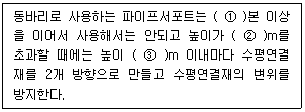
- ①:2, ②:3, ③:1
- ①:3, ②:3.5, ③:2
- ①:3, ②:3, ③:3
- ①:2, ②:3.5, ③:1
(정답률: 65%)
1⑤. 추락방지용 방망의 그물코가 10cm인 신제품 매듭방망사의 인장강도는 몇 킬로그램 이상이어야 하는가?
- 80
- 110
- 150
- 200
(정답률: 60%)
106. 통나무비계의 비계기둥 이음을 겹침이음할 경우 그 겹침이음 길이는 최소 몇 m 이상으로 하여야 하는가?
- 1m
- 1.5m
- 2m
- 2.5m
(정답률: 32%)
107. 토사붕괴 예방을 위해 지반종류에 따른 굴착면의 기울기 기준을 설명한 것으로 잘못된 것은?
- 보통흙(습지) 1 : 1 ~ 1 : 1.5
- 풍화암 1 : 0.8
- 연암 1 : 0.5
- 경암 1 : 0.2
(정답률: 58%)
108. 다음 중 산업안전기준에 관한 규칙에서 정의하는 양중기가 아닌 것은?
- 크레인
- 리프트
- 곤돌라
- 최대하중이 0.1ton인 승강기
(정답률: 68%)
109. 추락재해를 방지하기 위하여 사용하는 방망의 지지점이 연속적인 구조물이고 지지점의 간격이 1.0m 일 때 외력에 견딜 수 있어야 하는 강도는 최소 얼마 이상이어야 하는가?
- 200kg
- 400kg
- 600kg
- 800kg
(정답률: 34%)
110. 건설업 산업안전보건관리비로 사용할 수 없는 것은?
- 안전관리자의 인건비
- 교통통제를 위한 교통정리ㆍ신호수의 인건비
- 기성제품에 부착된 안전장치 고장시 교체 비용
- 근로자의 안전보건 증진을 위한 교육, 세미나 등에 소요되는 비용
(정답률: 62%)
111. 다음 중 연약지반 개량공법이 아닌 것은?
- 폭파치환 공법
- 샌드드레인 공법
- 우물통 공법
- 모래다짐말뚝 공법
(정답률: 44%)
112. 철륜 표면에 다수의 돌기를 붙여 접지면적을 작게 하여 접지압을 증가시킨 롤러로서 깊은 다짐이나 고함수비 지반의 다짐에 많이 이용되는 롤러는?
- 머캐덤롤러
- 탠덤롤러
- 탬핑롤러
- 타이어롤러
(정답률: 73%)
113. 항타기 및 항발기에 대한 설명으로 잘못된 것은?
- 도괴방지를 위해 시설 또는 가설물 등에 설치하는 때에는 그 내력을 확인하고 내력이 부족한 때에는 그 내력을 보강해야 한다.
- 와이어로프의 한 꼬임에서 끊어진 소선(필러선을 제외한다)의 수가 10% 이상인 것은 권상용 와이어로프로 사용을 금한다.
- 지름 감소가 호칭 지름의 7%를 초과하는 것은 권상용 와이어로프로 사용을 금한다.
- 권상용 와이어로프의 안전계수가 4 이상이 아니면 이를 사용하여서는 안된다.
(정답률: 63%)
114. 흙막이 벽을 설치하여 기초 굴착 작업 중 굴착부 바닥이 솟아올랐다. 이에 대한 대책으로 옳은 것은?
- 흙막이 벽의 근입깊이를 깊게 한다.
- 굴착작업의 속도를 빨리 한다.
- 수평버팀을 추가하여 흙막이벽의 지지력을 강화 시킨다.
- 흙맑이 벽의 변위가 생기지 않도록 시공의 정도를 높인다.
(정답률: 52%)
115. 유해ㆍ위험방지계획서를 제출해야 할 대상 공사에 대한 설명으로 잘못된 것은?
- 지상 높이가 31m 이상인 건축물 또는 공작물의 건설,개조 또는 해체 공사
- 최대지간 길이가 50m 이상인 교량건설 등의 공사
- 다목적댐ㆍ발전용댐 및 저수용량 2천만톤 이상의 용수전용댐 건설 등의 공사
- 깊이가 5m 이상인 굴착공사
(정답률: 68%)
116. 철골작업을 중지하여야 하는 기준으로 옳은 것은?
- 풍속이 초당 1미터 이상인 경우
- 강우량이 시간당 1센티미터 이상인 경우
- 강설량이 시간당 1센티미터 이상인 경우
- 10분간 평균풍속이 초당 5미터 이상인 경우
(정답률: 73%)
117. 부두 등의 하역작업장에서 부두 또는 안벽의 선에 따라 통로를 설치할 때의 폭은?
- 90cm 이상
- 75cm 이상
- 60cm 이상
- 45cm 이상
(정답률: 71%)
118. 다음의 토사붕괴 원인 중 외부의 힘이 작용하여 토사붕괴가 발생되는 외적요인이 아닌 것은?
- 사면의 경사 증가
- 굴착사면의 높이 증가
- 빗물의 침투로 인하여 토사의 중량 증가
- 함수비 증가로 인한 점착력 증가
(정답률: 71%)
119. 강관비계 조립시 준수사항으로 잘못된 것은?
- 비계기둥에는 미끄러지거나 침하하는 것을 방지하기위하여 밑받침철물을 사용하거나 깔판ㆍ깔목 등을 사용하여 밑둥잡이를 설치하는 등의 조치를 해야 한다.
- 비계기둥의 최고부로부터 31m 되는 지점 밑부분의 비계 기둥은 2본의 강관으로 묶어 세워야 한다.
- 비계기둥간의 적재하중은 40kg을 초과하지 아니 하도록 한다.
- 첫 번째 띠장은 지상으로부터 높이 2m 이하의 위치에 설치해야 한다.
(정답률: 60%)
120. 기초, 보의 측면, 기둥, 벽의 거푸집널은 24시간 이상 양생한 후에 콘크리트의 압축강도가 일정한 값 이상에 도달하였음을 시험에 의하여 확인된 경우에 해체할 수 있는데, 이때 그 기준이 되는 콘크리트의 압축강도는?
- 5MPa
- 7MPa
- 8MPa
- 10MPa
(정답률: 38%)